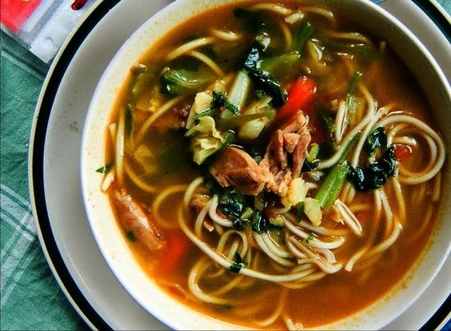

Thukpa

Description
Thukpa is a comforting and hearty Tibetan noodle soup that combines savory broth, noodles, and a variety of vegetables and proteins. This flavorful soup is often seasoned with aromatic spices, making it a popular and satisfying dish. Whether enjoyed on a chilly day or as a nourishing meal, Thukpa is a delightful taste of Tibetan cuisine.
Ingredients
- Egg noodles or rice noodles
- Chicken or vegetable broth
- Chicken, thinly sliced (or tofu for a vegetarian version)
- Carrots, julienned
- Cabbage, shredded
- Spinach or bok choy, chopped
- Onions, thinly sliced
- Garlic, minced
- Ginger, grated
- Soy sauce
- Chili sauce (optional)
- Cilantro, chopped (for garnish)
Steps
- Boil the egg or rice noodles according to package instructions, then set aside.
- In a large pot, sauté minced garlic and grated ginger until fragrant.
- Add sliced onions and continue to sauté until they are translucent.
- Add thinly sliced chicken (or tofu) and cook until browned.
- Pour in the chicken or vegetable broth and bring to a simmer.
- Add julienned carrots, shredded cabbage, and chopped spinach or bok choy to the pot.
- Season with soy sauce and chili sauce (if using), adjusting to taste.
- Simmer until the vegetables are tender and the flavors meld together.
- Divide the cooked noodles among serving bowls and ladle the hot soup over the noodles.
- Garnish with chopped cilantro and serve hot.